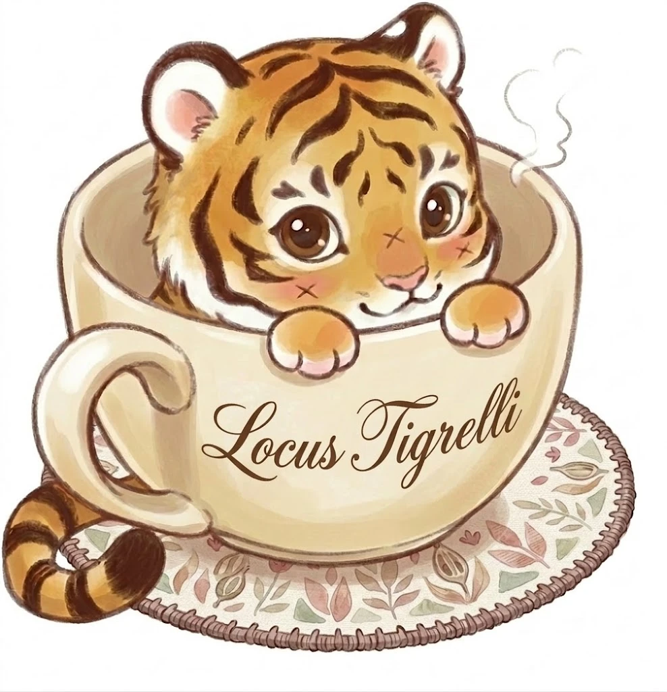

Dr.MSDS
SaaS POMSDS 자동작성·관리 SaaS 운영 및 고도화
- 핵심 문제
- 수시로 개정되는 규제가 늦게 반영되면 고객사가 잘못된 MSDS를 작성할 위험
- 핵심 대응
- 규제 부서와 상시 모니터링·신속 패치 프로세스 구축, 규제 데이터 관리 시스템 운영
- 결과
- 약 170개 기업이 쓰는 서비스를 6년간 안정적으로 운영

정태희
IT 프로덕트 매니저(PM) · PO
개발자로 시작해 IT 서비스의 기획, 구축, 운영, 고도화까지 경험해 온 기술 기반 PM/PO입니다.
최근 약 8년간 기업용 SaaS 솔루션 운영, 신규 제품 기획 및 상용화, 대기업·공공기관 대상 시스템 구축 프로젝트를 수행했습니다.
복잡한 도메인의 요구사항을 업무 프로세스와 데이터 구조로 구체화하고, 기술적 제약과 비즈니스 목적 사이에서 실행 가능한 대안을 찾는 데 강점이 있습니다.
최근에는 생성형 AI를 활용한 개인 프로젝트를 통해 AI 기반 제품의 설계와 개발 협업 방식까지 경험을 확장하고 있습니다.
MSDS 자동작성·관리 SaaS 운영 및 고도화
LCA 기반 탄소관리 솔루션 기획 및 상용화
대기업·공공기관 대상 표준 솔루션 구축 및 커스터마이징
TFT 메타 정보 sLLM + RAG 챗봇 서비스